Creative Intelligence Studio · demonstration
Everything on this page was produced by the plugin's own commands for Haldora, a fictional home-battery company. The pictures are files the system generated or screenshots its QA harness captured; the numbers are read from its report files.
Direction: Daylight Ledger. The day arc: a sun on a dashed arc above a horizon, positioned by the time of day. It is the logo, the scroll story, the chart, the app dial and the light on the product.
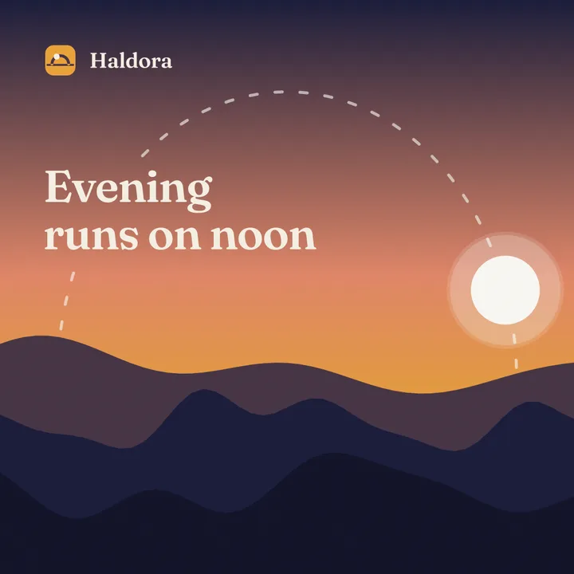
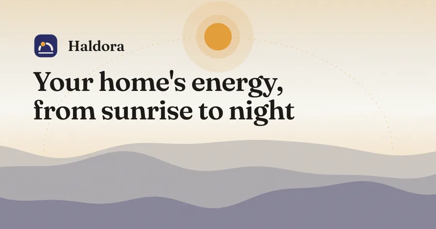
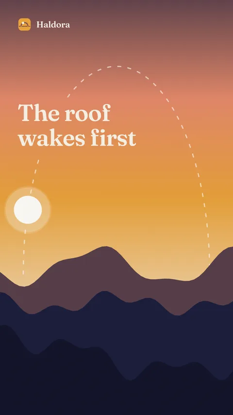
The logo is delivered as SVG built from filled paths with the wordmark outlined, in colour, reversed and one-colour variants, plus PNG, WebP and vector PDF. Brand guidelines (PDF). No trademark search or clearance has been performed.
Generated by the built-in procedural engine from the DNA's colours, motifs and texture: offline, free and reproducible from a seed. Each file was checked for exact dimensions, blank output, palette adherence, byte budget and near-duplicates before it was registered.
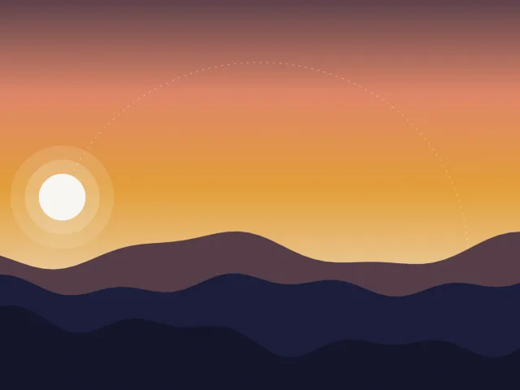
story-dawn · 1600×1200 · local-procedural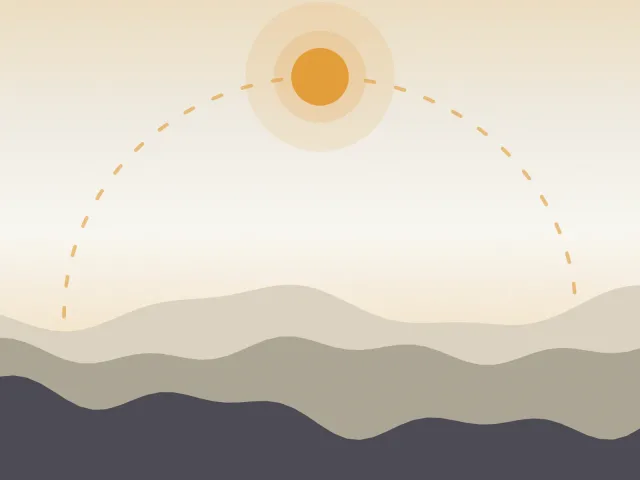
story-noon · 1600×1200 · local-proceduralstory-dusk · 1600×1200 · local-proceduralstory-night · 1600×1200 · local-procedural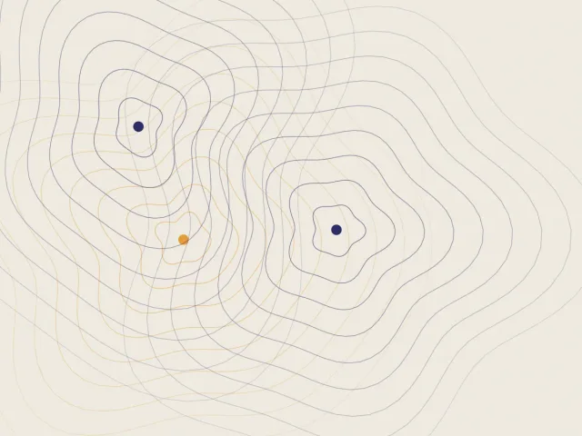
feature-contour · 1200×900 · local-procedural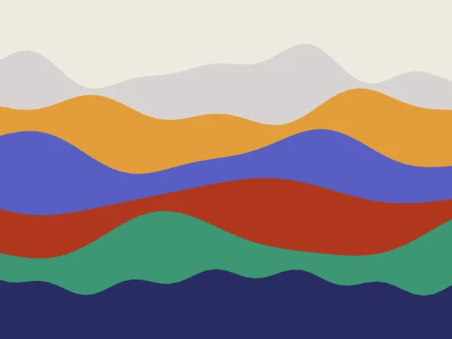
feature-strata · 1200×900 · local-procedural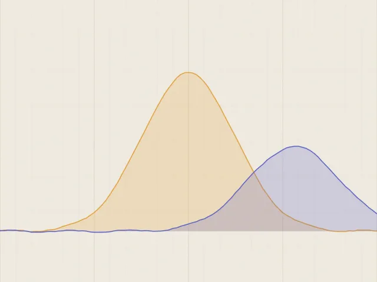
feature-instrument · 1200×900 · local-procedural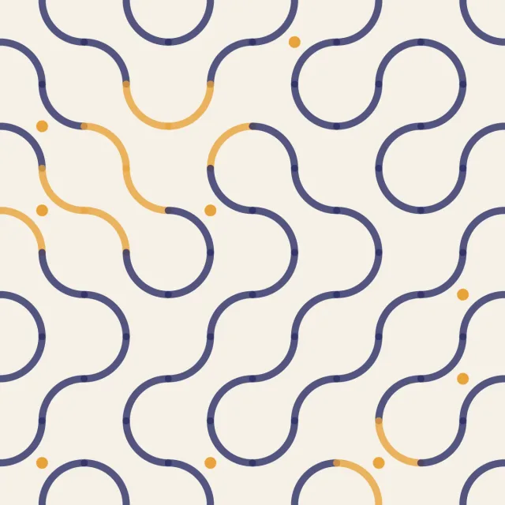
pattern-arc · 1200×1200 · local-procedural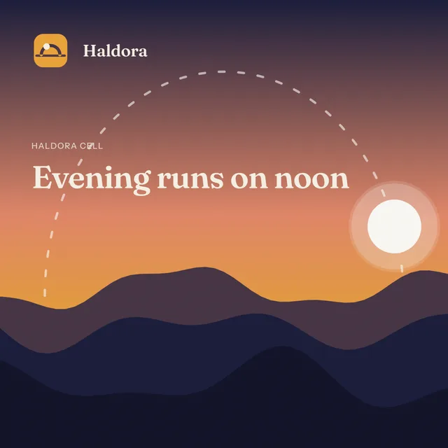
campaign-square · 1080×1080 · local-proceduralcampaign-wide · 1200×630 · local-proceduralbloom-ground · 1600×1000 · local-procedural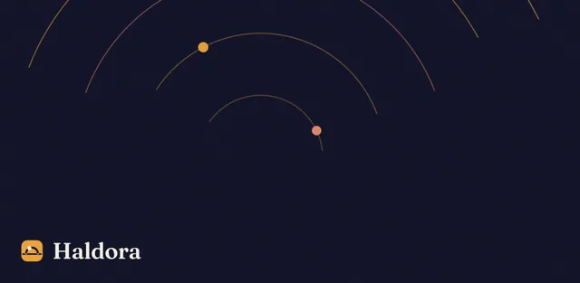
app-store-feature · 1024×500 · local-proceduralPre-rendered in English and Arabic. On wide screens scrolling moves the sun along the day arc and cross-fades the scene per chapter; on phones, with reduced motion, or without JavaScript it is a plain illustrated story.
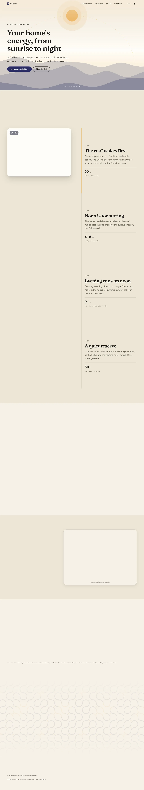
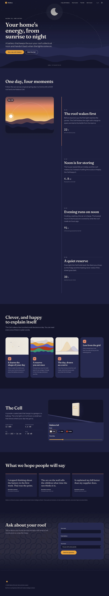
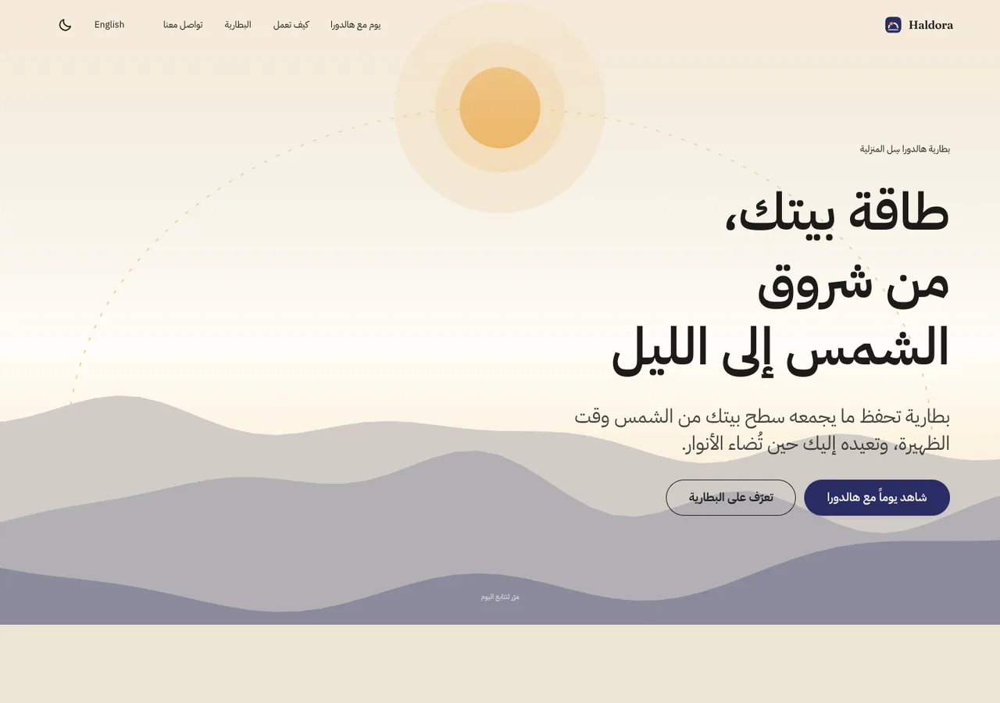
A React application: day chart with a keyboard-operable time slider and a table alternative, device states with error recovery, a sortable table, and settings that save optimistically and roll back on failure.
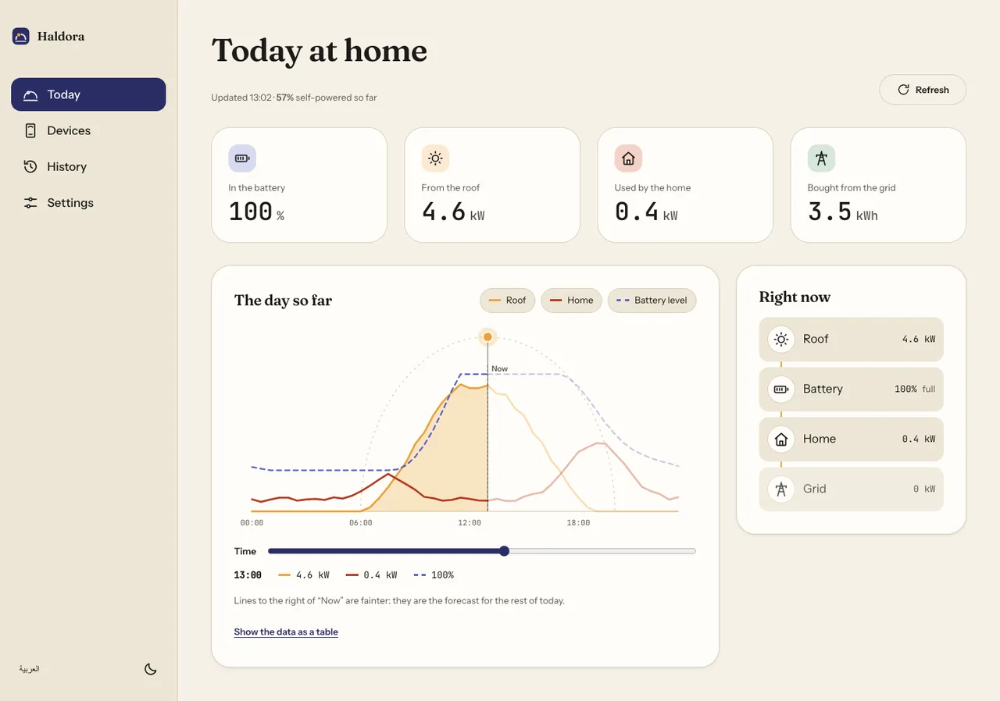
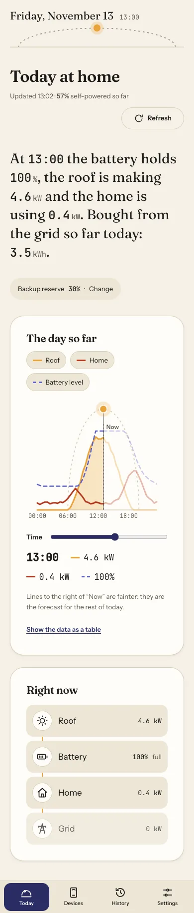
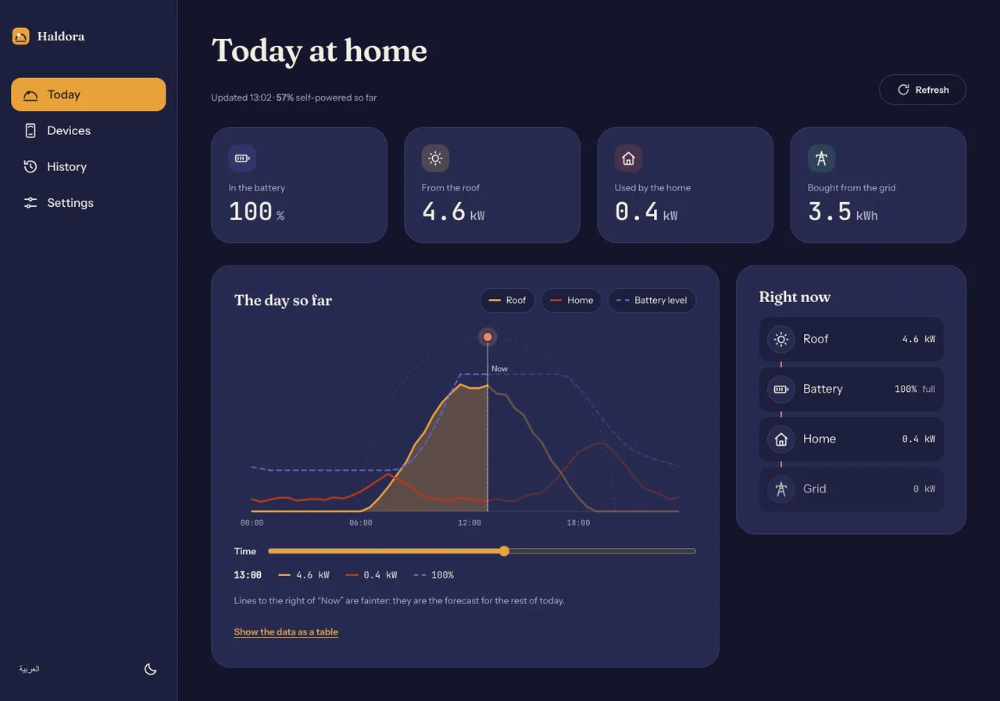
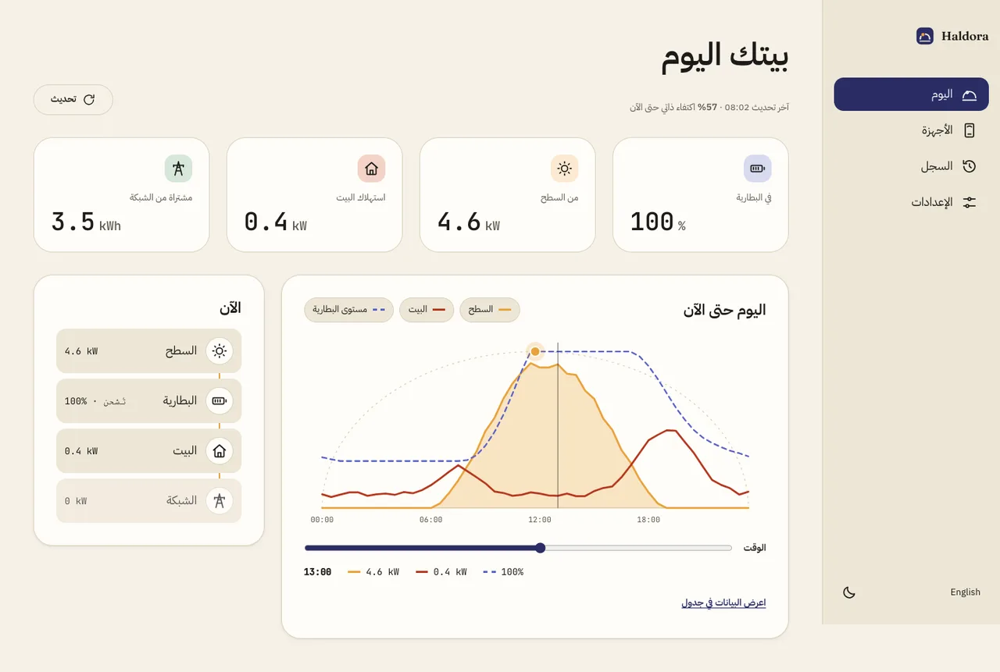
An Expo and React Native project. These captures are from the web export of the same code, which is how gestures and navigation were exercised automatically.
Verified here: TypeScript, Jest, production Hermes bundles for iOS and Android, and browser flows for swipe, tabs, detail, slider drag, offline and Arabic. Not verified here: native builds, device gestures, VoiceOver and TalkBack. This machine has neither Xcode nor the Android SDK, and those checks are reported as blocked.
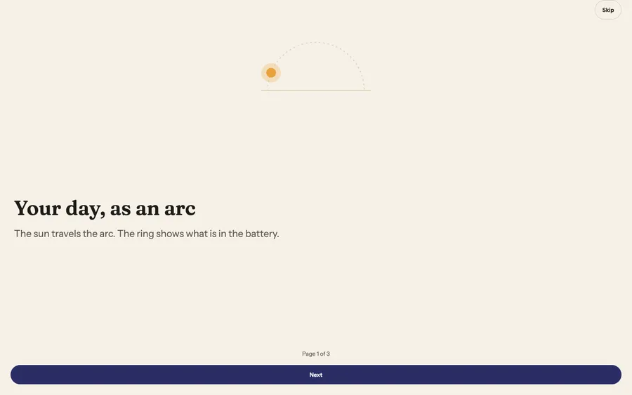
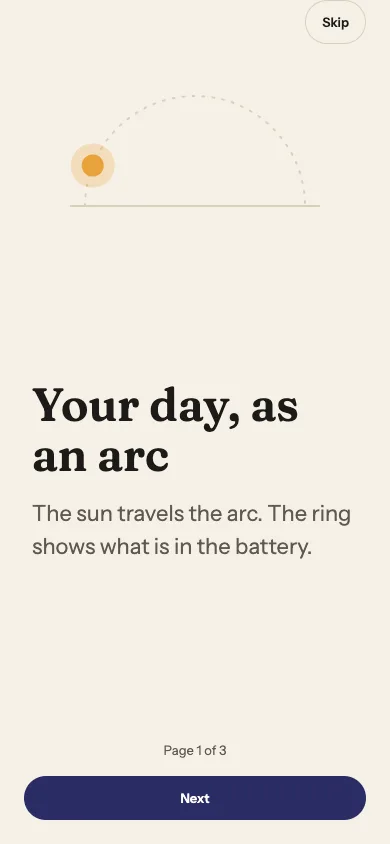
A GLB generated from procedural geometry: 7,980 triangles in 7 draw calls, 200 KB before optimisation and 56 KB after, with 0 validator errors. The arc and sun on the product are the same signature as the logo; the time control moves the sun.
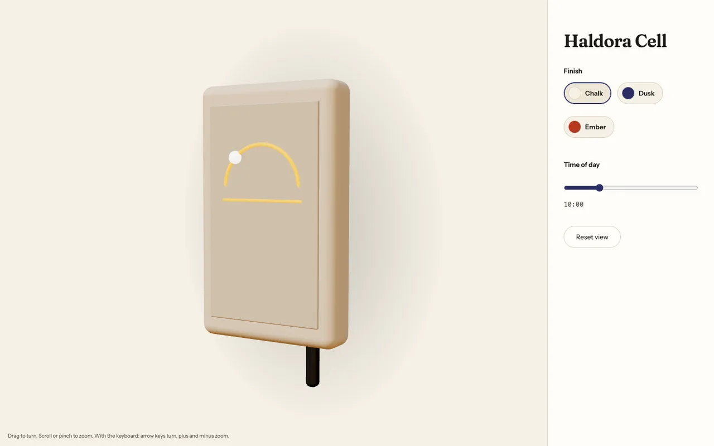
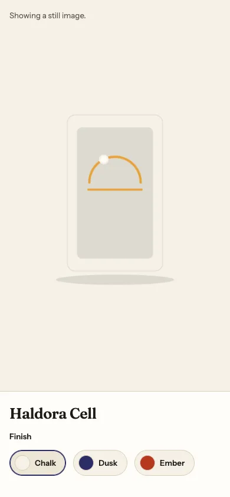
Each deliverable carries a token file generated from the same DNA revision. The consistency check regenerates the tokens and compares bytes, then scans source for colours and typefaces outside the DNA.
| Deliverable | Tokens | DNA revision | Source files scanned | Off-palette colours | Foreign fonts |
|---|---|---|---|---|---|
| brand | not-applicable | – | 54 | 0 | 0 |
| website | current | 1 | 5 | 0 | 0 |
| web-app | current | 1 | 9 | 0 | 0 |
| mobile | current | 1 | 15 | 0 | 0 |
| scene-3d | current | 1 | 5 | 0 | 0 |
Automated verdict: incomplete. Generated 2026-11-13T00:11:38.768Z on darwin 22.6.0 x64. Performance and frame figures are lab measurements from this machine, not field data.
| Target | Pass | Fail | Warn | Blocked | Scripted flows |
|---|---|---|---|---|---|
| app | 37 | 0 | 6 | 0 | 12 |
| mobile-native | 5 | 0 | 0 | 2 | 0 |
| mobile-web | 19 | 0 | 0 | 0 | 7 |
| project | 4 | 0 | 0 | 0 | 0 |
| scene | 32 | 0 | 4 | 0 | 10 |
| security | 16 | 0 | 2 | 0 | 0 |
| web | 34 | 0 | 6 | 0 | 9 |
app/a11y-axe:portal:light 1 rule(s) axe could not decide and a person must check: color-contrast (4)app/a11y-axe:portal:dark 1 rule(s) axe could not decide and a person must check: color-contrast (4)app/web-vitals-lab:portal Lab: LCP 1248ms, CLS 0.0004, TBT 363ms, first tap 320ms (median of 5). Over the default budget (TBT 363ms > 300ms) but within this deliverable's documented exception: Application shell: evaluating the React runtime and rendering the first screen takes 0.5 to 0app/a11y-axe:portal-ar:light 1 rule(s) axe could not decide and a person must check: color-contrast (4)app/a11y-axe:portal-ar:dark 1 rule(s) axe could not decide and a person must check: color-contrast (4)app/web-vitals-lab:portal-ar Lab: LCP 1700ms, CLS 0.0007, TBT 515ms, first tap 384ms (median of 5). Over the default budget (TBT 515ms > 300ms) but within this deliverable's documented exception: Application shell: evaluating the React runtime and rendering the first screen takes 0.5 to 0mobile-native/native-ios:mobile Native iOS build and simulator tests cannot run: full Xcode is not installed on this machine. Needs macOS with Xcode, then `npx expo run:ios`; store builds also need an Apple signing identity.mobile-native/native-android:mobile Native Android build and emulator tests cannot run: the Android SDK is not installed on this machine. Needs Android Studio / SDK and an emulator or device, then `npx expo run:android`; store builds also need a signing keystore.scene/a11y-axe:scene:light 1 rule(s) axe could not decide and a person must check: color-contrast (1)scene/a11y-axe:scene:dark 1 rule(s) axe could not decide and a person must check: color-contrast (1)scene/a11y-axe:scene-still:light 1 rule(s) axe could not decide and a person must check: color-contrast (1)scene/a11y-axe:scene-still:dark 1 rule(s) axe could not decide and a person must check: color-contrast (1)security/licences:web 5 packages; needs a human licence decision: gsap (Standard 'no charge' license: https://gsap.com/standard-license.)security/vulnerabilities:mobile pnpm audit: 0 critical, 0 high, 4 moderate, 1 low (production dependencies)web/a11y-axe:home:light 1 rule(s) axe could not decide and a person must check: color-contrast (12)web/a11y-axe:home:dark 1 rule(s) axe could not decide and a person must check: color-contrast (12)web/web-vitals-lab:home Lab figures unreliable: host load was 3.07 per core and blocking time ranged 137 to 2273ms across five identical loads. Median LCP 952ms, CLS 0, TBT 316ms, first tap 272ms (median of 5) would be over budget (TBT 316ms > 300ms). Re-run on an idle machine beforeweb/a11y-axe:home-ar:light 1 rule(s) axe could not decide and a person must check: color-contrast (4)web/a11y-axe:home-ar:dark 1 rule(s) axe could not decide and a person must check: color-contrast (4)web/web-vitals-lab:home-ar Lab: LCP 1924ms, CLS 0.0123, TBT 150ms, first tap 208ms (median of 5); first scripted tap took 208ms to paint under 4x throttling (the 200ms INP threshold applies to field data; investigate on a real device)Approval gates G0-brief, G1-direction, G2-system were recorded by the demonstration script and are marked simulated. The independent creative review and gates G6 (quality) and G7 (acceptance) are open, so the demo ends with a draft package, not a final one. Automated checks are evidence; they are not client approval.
pnpm install node scripts/run-demo.mjs --full # brief to draft package: install, build, test, audit node scripts/build-showcase.mjs # this page pnpm test && pnpm test:e2e # the system's own tests
Inputs are in demos/haldora/inputs/; outputs in demos/haldora/project/; reports in demos/haldora/project/.cis/reports/.